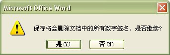

开始菜单 -> 程序 -> Microsoft Office -> Microsoft Office 工具 -> VBA 项目的数字证书
位置:D:\Program Files\Microsoft Office\OFFICE11\SELFCERT.EXE

"您的证书名称" 中输入如:netkiller
单击"确定"按钮

以Word为例,启动Word 新键文档并输入一些内容或打开一个有内容的文档
Word -> 工具 -> 选项 -> 安全性 -> 数字签名

单击"添加"按钮

单击"是"按钮,同时保存文档

在列表内选择刚才创建是数字证书"netkiller"
单击"OK"按钮

单击"确定"按钮
选项对话框内单击"确定"按钮
关闭Word 完成操作
验证数字签名是否有效
打开刚刚签名的文档

Word窗口标题栏上(已签名,未验证) 表示签名成功
如果有人修改你的文档,当他再次保存时提示

再打开文档时Word窗口标题栏上"(已签名,未验证)"消失,表示你的文档被其它人撰改
Tip
你同样可以使用第三方数字证书来签名你的文档